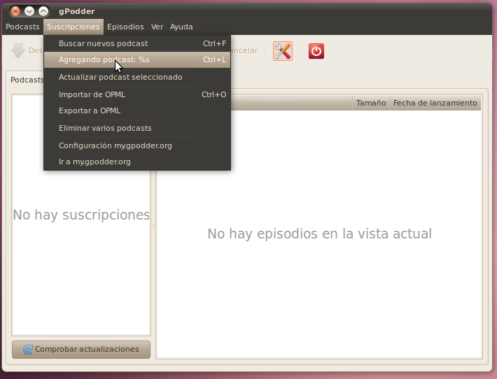
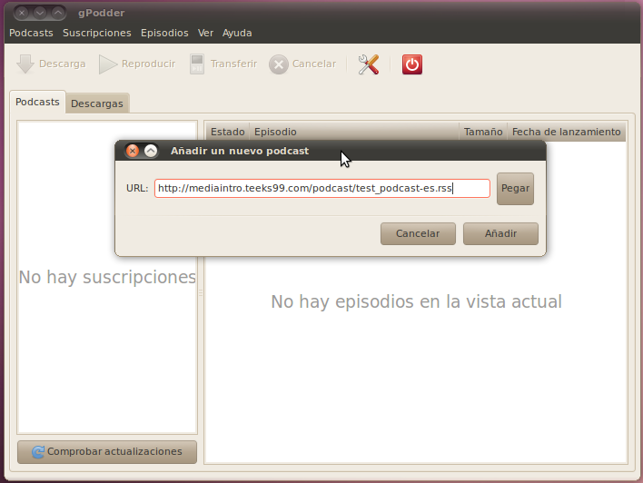
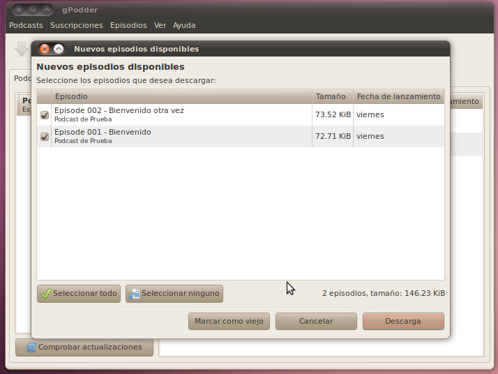
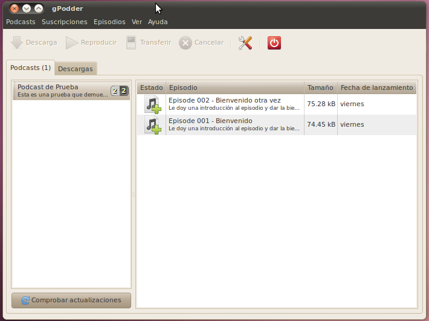

Podcasts
Actualmente, el método más común para distribuir
programas de audio (así como programas de video) es en el internet a
través de podcasts (http://en.wikipedia.org/wiki/Podcast http://es.wikipedia.org/wiki/Podcast). La manera en la que un podcast trabaja para un usario es cuando el usuario utiliza un cliente de podcasts (iTunes, Juice - http://juicereceiver.sourceforge.net, gPodder - http://gpodder.org/,
Google Listen, etc) que verifica periódicamente en búsqueda de
"alimentadores" (feeds) de material nuevo. Cuando el cliente ve que hay
material nuevo disponible, lo descarga automáticamente al computador, y
cuando está listo lo presenta al usuario para que se pueda escuchar.
Este formato ha resultado muy poplar porque es muy simple para el
usuario. No hace falta ir a ningún sitio web para descargar material, o
esperar mientras descarga, ya que en el momento en que el usuario se da
cuenta que hay material nuevo, ya está descargado al computador.
Algunos de los clientes de podcasts más avanzados también pueden
sincronizar el alimentador a un reproductor de media portátil como un
iPod o equipo MP3.
Para el productor del contenido, la parte más importante es es
crear un alimentador (feed) que todos los clientes puedan leer. Este
"feed" consiste simplemente de un archivo enumerando todos los
episodios del show. Este archivo contiene información sobre cada
episodio así como un enlace al contenido de ese episodio (usulmente
MP3, aunque Ogg también es común). tanto el archivo para el "feed" como
el contenido al cual es dirigido usualmente son archivos que están
disponibles para descargarse de un servidor de web. Periódicamente las
aplilcaciones clientes irán al URL de este archivo en el servidor, lo
descargarán, y verán si contiene algo nuevo. Para facilitar todo este
trabajo, el formato del archivo para el alimentador está definido
específicamente.
Básicos de XML
El archivo es de un formato especial llamado
"Really Simple Syndication" o RSS (Sindicación Muy Simple). Rss es un
tipo de archivo XML (el otro tipo de archivo XML que hemos visto en
este curso es el SVG para imágenes), en el cual cada pieza de data está
contenida dentro de etiquetas que especifican qué tipo de data es.
Aquí hay un ejemplo muy básico de un archivo XML:
<?xml version="1.0" encoding="UTF-8" ?>
<usuarios> <!-- Esta es la lista de usarios en el sistema -->
<usuario>
<nombre>Juan</nombre>
<direccion>1234 Calle Vista</direccion>
<telefono tipo="local">456-7890</telefono>
</usuario>
<usuario>
<nombre>Maria</nombre>
<direccion>4321 Calle Vista</direccion>
<telefono tipo="larga_distancia">1-123-555-555</telefono>
</usuario>
</usuarios>
El XML está definido por tipos de data, cada uno de los cuales
comienza con una etiqueta que contiene su nombre, como
<direccion> y termina con una etiqueta que tiene un diagonal "/"
y luego el nombre del tipo, como </direccion>. Puedes ver que
cada tipo de data puede contener tres cosas: mas tipos de data, la data actual, y atributos de la data. Estos dos ultimos los he marcado en azul y en rojo para que pueda ver qué son. Además, hay comentarios
que pueden estar en cualquier lugar. Estos comentarios siempre
comienzan con "<!--"y continúan hasta que encuentren un "-->" que
indica el final del comentario.
http://en.wikipedia.org/wiki/XML
http://es.wikipedia.org/wiki/XML
Definición de un Feed RSS
Volviendo a RSS, es solo un formato
específico de XML. El RSS se usa para Podcasts pero también se puede
usar para cualquier otro tipo de alimentador como blogs, artículos de
noticias, streams de fotos, etc. El layout básico de XML para RSS es el
siguente (usado para un blog). Lee a lo largo de esto para entender el
uso de las etiquetas y a lo que se refieren.
<?xml version="1.0" encoding="UTF-8" ?>
<rss version="2.0">
<channel>
<title>Mi Blog</title>
<description>Que esta pasando en mi vida.</description>
<link>http://ejemplo.com/blog/</link>
<lastBuildDate>Mie, 23 Mar 2011 14:55:12 -0400 </lastBuildDate>
<item>
<title>Algo gracioso</title>
<description>Esto fue muy gracioso.</description>
<link>http://ejemplo.com/posts/Gracioso.html</link>
<guid>00002</guid>
<pubDate>Mie, 23 Mar 2011 14:55:12 -040 </pubDate>
</item>
<item>
<title>Algo serio</title>
<description>Esto es en lo que he estado pensando.</description>
<link>http://ejemplo.com/posts/Algoserio.html</link>
<guid>00001</guid>
<pubDate>Mar, 22 Mar 2011 13:20:42 -040 </pubDate>
</item>
</channel>
</rss>
channel - canal
title - título
description - descripción
link - enlace
lastBuildDate (Last Build Date) - Fecha de Ultima Versión
item - artículo (cosa)
guid (Globally Unique IDentifior) - Identificador Global Unico
pubDate (Short for Publication Date) - Fecha de Publicación
En este caso, estamos usando cinco tipos de data para este canal:
title, description, link, lastBuildDate, y pubDate. Esta no es una
lista completa de todos los posibles tipos de data que se pueden usar
en RSS, ya que hay varios más. Para una lista y explicación completa,
puedes referirte a la especificación de RSS en:
http://www.rssboard.org/rss-specification
El Canal
title - El título para el "feed"
description
- Una descripción de lo que contiene el "feed". Esta puede ser larga o
corta y debe ser útil par un usuario poder determinar si consideraría
el contenido del feed como algo interesante.
link - Este es un enlace a la página que contiene información general
sobre el alimentador (no sobre ningún artículo en específico). Por
ejemplo esto puede ser un enlace a un archivo de artículos previos.
lastBuildDate - Cuando el alimentador fue modificado por última vez.
item - Cada item contiene más información sobre un episodio o artículo en específico.
La Item
title - El título de este item.
description - Una descripción sobre lo que contiene el artículo; esto
puede ser muy largo. Para un blog o un artículo de noticias esto puede
tener hasta el contenidos textual entro. Para un podcast, esto puede
tener algunas notas sobre el show.
link - Un enlace a la página web del artículo.
guid - Esto debe ser algo que identifica de forma única a este
artículo. Una vez publicas un "feed" con algo de texto en este campo,
puede que no lo vuelvas a ver. Es usado por el cliente para determinar
si ya ha visto este artículo (y no tendrá que descargarlo de nuevo).
pubDate - La fecha y hora en la que este artículo fue añadido al alimentador.
http://en.wikipedia.org/wiki/RSS
http://es.wikipedia.org/wiki/RSS
http://www.xul.fr/en-xml-rss.html - Tutorial on building RSS
Específicamente para Podcasts
El ejemplo de RSS anterior en
realidad no era para un podcast, ya que no habia ningún archivo de
audio en su contenido. Era algo más apropiado para un blog. Ahora
podemos ver otro ejemplo, que añade un tipo de data clave para
convertir el RSS en un alimentador de podcasts.
<?xml version="1.0" encoding="UTF-8" ?>
<rss version="2.0">
<channel>
<title>Mi Podcast</title>
<description>Lo que está ocurriendo en mi vida.</description>
<link>http://ejemplo.com/blog/</link>
<lastBuildDate>Wed, 23 Mar 2011 14:55:12 -0400 </lastBuildDate>
<item>
<title>Episode 002 - Cuento gracioso</title>
<description>Esto fue muy gracioso.</description>
<link>http://ejemplo.com/shows/ep002_notas.html</link>
<guid>00002</guid>
<pubDate>Mie, 23 Mar 2011 14:55:12 -040 </pubDate>
<enclosure url="http://ejemplo.com/media/ep002.mp3" length="3456789" type="audio/mpeg" />
</item>
<item>
<title>Episode 001 - Algo serio</title>
<description>Esto es en lo que he estado pensando.</description>
<link>http://ejemplo.com/shows/ep001_notas.html</link>
<guid>00001</guid>
<pubDate>Mie, 22 Mar 2011 13:20:42 -040 </pubDate>
<enclosure url="http://ejemplo.com/media/ep001.mp3" length="1234567" type="audio/mpeg" />
</item>
</channel>
</rss>
Puedesver que añadimos el tipo de data de "enclosure" a
cada item. El tipo de data de enclosure no tienen nada de data actual
que va consigo, sino sólo tres atributos que necesitan ser
establecidos: el lugar donde se encuentra el archivo, el tamaño del
archivo (en bytes), y el tipo de archivo (para MP3 esto es audio/mpeg).
Notas del Show
Tal vez te hayas preguntado a dónde apunta el
enlace a cada artículo, dado que el audio está contenido en el
enclosure. En este caso no hay una necesidad estricta sobre un tipo de
enlace de data para estos artículos. Al crear un podcast, sin embargo,
es usualmente una muy buena idea el tener una página web en la cual se
almacene cada episodio. esta página web usualmente se llama "notas del
show" y contiene información sobre lo que está pasando en el audio. Por
ejemplo puede contener el nombre (y boletos) a canciones que se
reprodujeron, información sobre invitados entrevistados, enlaces a
temas que se discutieron, etc. No vamos a llegar muy lejos en esa
dirección al momento, ya que todavía no hemos llegado a la sección de
crear páginas web. Simplemente nota que esto es una parte importante de
tener un podcast.
Generadores de Podcasts
Si no quieres ensuciarte las manos
creando tu propio alimentador RSS (aunque hacerlo or tí mismo es muy
recomendado), hay también varias organizaciones que pueden hacer todo
el trabajo por tí. Ve y trata de buscar "podcast hosting" en Google. Si
quieres usar las herramientas para generar el alimentador RSS, busca en
google "podcast generator". Hay por lo menos un programa de
generador de software libre que está disponible y lo puedes descargar
en: http://podcastgen.sourceforge.net/
Cómo encontrar Podcasts
Una vez tu alimentador de podcast esté completo, puedes darle el
URL a quien que quieras. Sin embargo, tal vez también te interece
alcanzar una mayor audiencia. Esto requiere publicar tu podcast en un
directorio de podcasts al cual consumidores puedan ir a buscarlo. El
directorio de podcasts más grande es la tienda de iTunes (aunque ellos
tienen data especial que se tienen que añadir al alimentador) pero hay
varios otros sitios que son buenos también:
http://podcastellano.es
http://www.apple.com/itunes/podcasts/
http://podcast.com/
http://www.podcastalley.com/
http://www.podomatic.com/
Obtener Podcasts en gPodder
El mejor cliente de software para
podcasts es gPodder. Está disponible en Linux (Ubuntu y otros),
Windows, y Mac, y facilita randemente el proceso de mantenerse al día
con tus podcasts.
Para empezar, abramos gPodder y vayamos a Subscripciones -> Agregando podcast.

Una vez esto esté abierto, ve a la página principal del podcast: http://mediaintro.teeks99.com/podcast/.
Desde aquí verás un enlace al alimentador de RSS de nuestros Podcasts.
Puedes hacer clic derecho en este enlace y luego copiarlo para pegarlo
en la caja de gPodder.

Ahora gPodder va a ir a obtener toda la información disponible
sobre este "feed". Va a encontrar que hay dos episodios disponibles y
sugerir que comienzas a descargar.

Una vez la descarga haya completado, te mostrará todo el audio que está disponible para ser escuchando.

Luego de este punto gPodder seguirá verificando el "feed"en busca
de más episodios regularmente. Además, puedes ajustar las opciones para
que sincronize los podcasts automáticamente a tu equipo móvil de MP3.
esto va a subir los podcasts nuevos al reproductor, y puede removerlos
de gPodder una vez los hayas escuchado.